Starter: Master Your Data & Visuals
40% accuracy boost · 50% faster QA
Tagging audits, prototype frameworks, and a 30-min consult. Ideal for: Ecom, SaaS, media.
Ovia Inc
Precision-crafted automation to streamline workflows, boost output, and cut wasted time — the summer engagements, served in four courses. We deliver rapid results, strategic impact, and high-clarity deliverables. Now booking limited Summer Tasting Menu engagements — only a few summer slots.
40% accuracy boost · 50% faster QA
Tagging audits, prototype frameworks, and a 30-min consult. Ideal for: Ecom, SaaS, media.
35% faster delivery · Save 10+ hours/week
Optimized flows, templates, and a strategy doc. Ideal for: Ops & marketing teams.
30% more ad engagement · 4x faster SOPs & designs
Variant generators, branded assets, and SOP frameworks. Ideal for: DTC & HR.
30% lift in engagement · 70% error reduction
Messaging & QA toolkits.
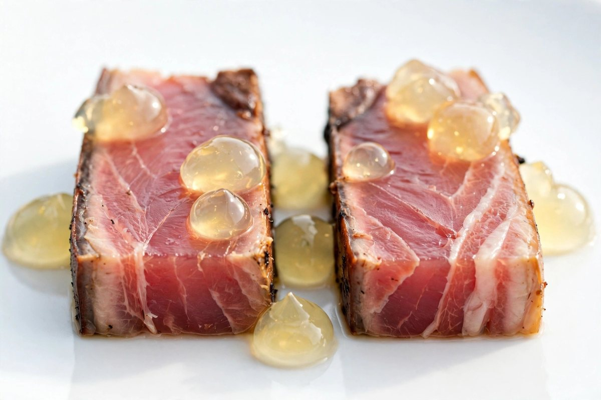
Bluefin Belly · Smoked · Citrus-Sake Gel
Bluefin belly, smoked and paired with citrus-sake gel — two contrasting preparations illustrating the power of context embeddings to shape meaning and flavor.
Calibrated, sharp, and beautifully nuanced.
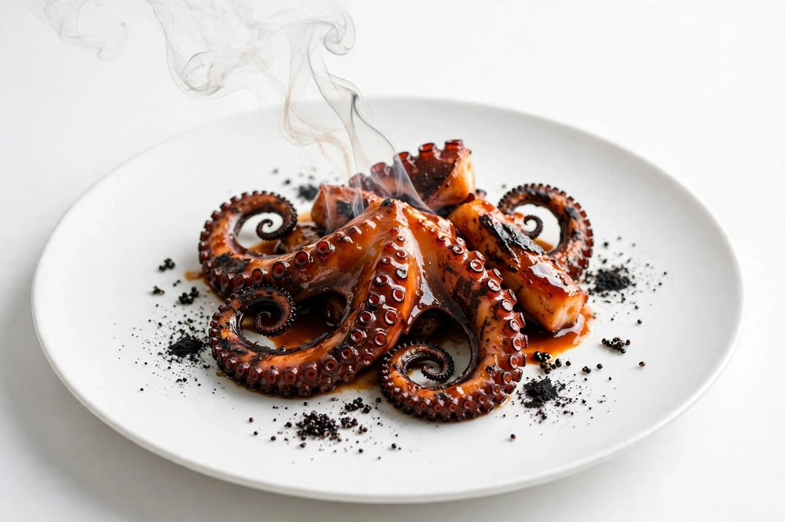
Charred Octopus · Rocoto-Miso · Black Quinoa Ash · Yuzu Smoke
Charred octopus glazed with rocoto-miso on black quinoa ash, finished tableside with yuzu smoke — unveiling the hidden layers of latent space flavor profiles.
Discover what lies beneath the surface.
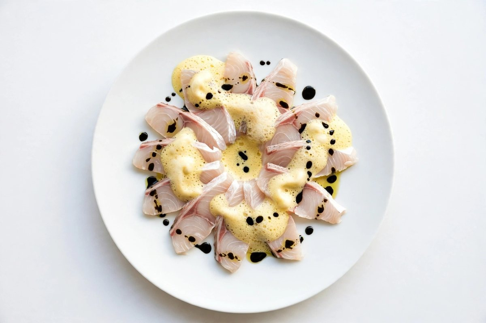
Snapper · Ají Amarillo Foam · Black Garlic Oil
Thinly sliced snapper dressed in ají amarillo foam and black garlic oil — an elegant example of few-shot learning adapting instantly to new contexts.
Calibrated, sharp, and beautifully nuanced.
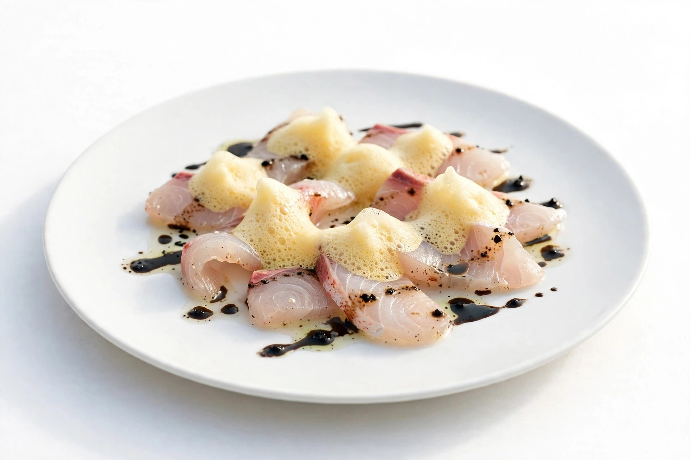
Sashimi-Thin Snapper · Ají Amarillo Foam · Black Garlic Oil
Sashimi-thin snapper with ají amarillo foam and black garlic oil — an elegant example of few-shot learning adapting instantly to new contexts.
Calibrated, sharp, and beautifully nuanced.
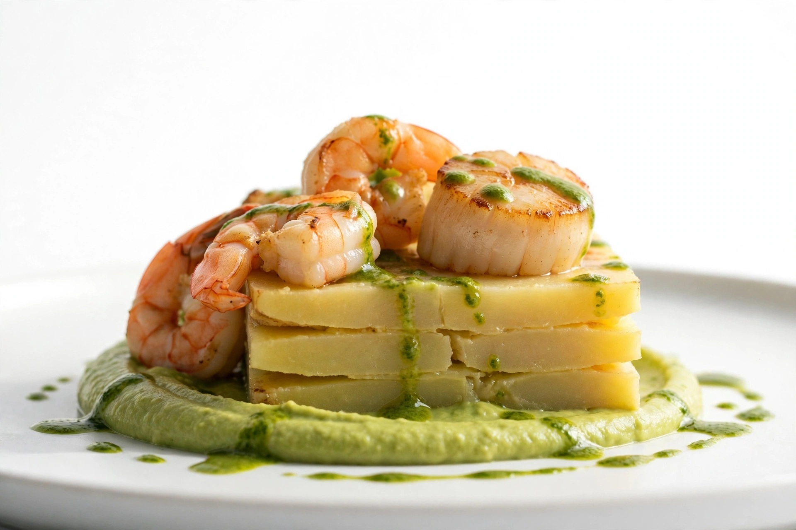
Warm Scallop & Shrimp Causa · Avocado Purée · Huacatay Emulsion
Warm scallop and shrimp layered causa with avocado purée and huacatay emulsion — interactive like a prompt cascade, evolving as you engage.
You guide the generative process.
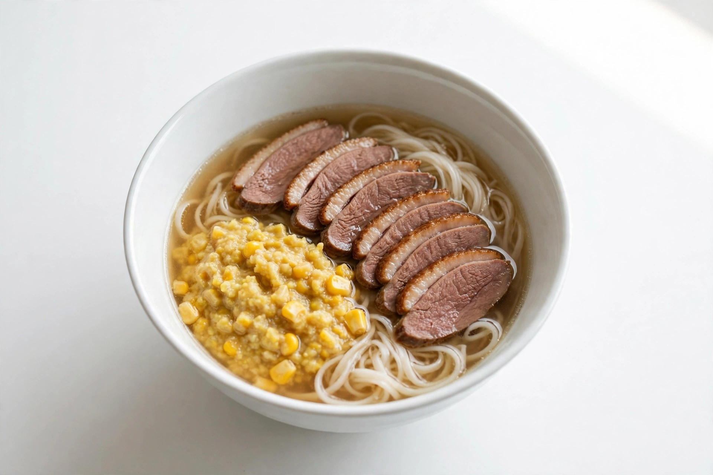
House-Fermented Broth · Smoked Duck · Corn Miso · Rice Noodles
House-fermented broth poured live over smoked duck, corn miso, and rice noodles — flavors streaming sequentially like an autoregressive model predicting every delicious token.
Predictably unpredictable.
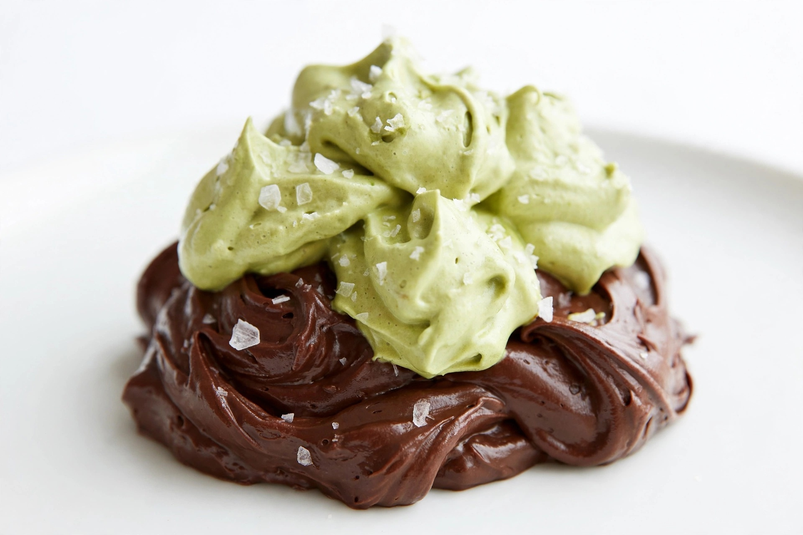
Peruvian Chocolate · Whipped Matcha Mousse · Sea Salt
Peruvian chocolate core diffused into whipped matcha mousse, dusted with sea salt — each serving unique, reflecting stochastic sampling in delicious form.
Elegant randomness on your palate.
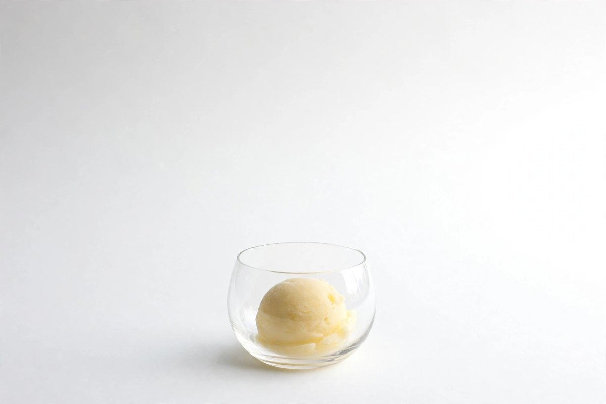
Yuzu Sorbet
Yuzu sorbet crafted to reflect the gradual emergence of flavor through diffusion modeling.
Bright, refreshing, and evolving.
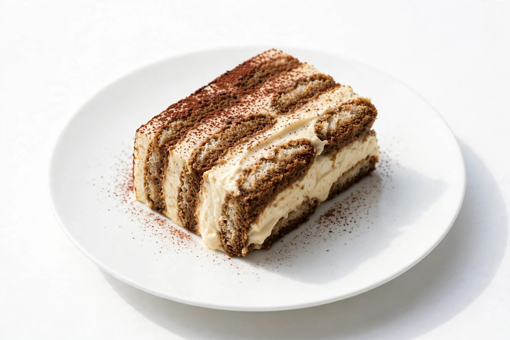
Classic Tiramisu · Espresso · Mascarpone
Classic tiramisu layered with espresso and mascarpone — reimagined through transformer architectures balancing sequence and context.
Rich, layered, and thoughtfully sequenced.
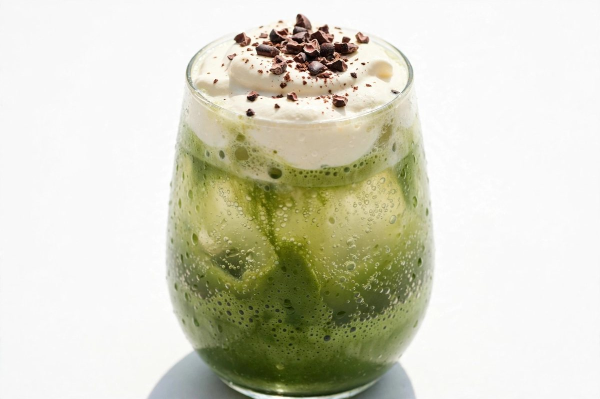
Nitro Matcha · Salted Vanilla Cream · Yuzu Soda · Cacao Nib Dust
Pairs with: Stochastic Ganache Cloud
A delicious uncertainty — no two tongues alike.
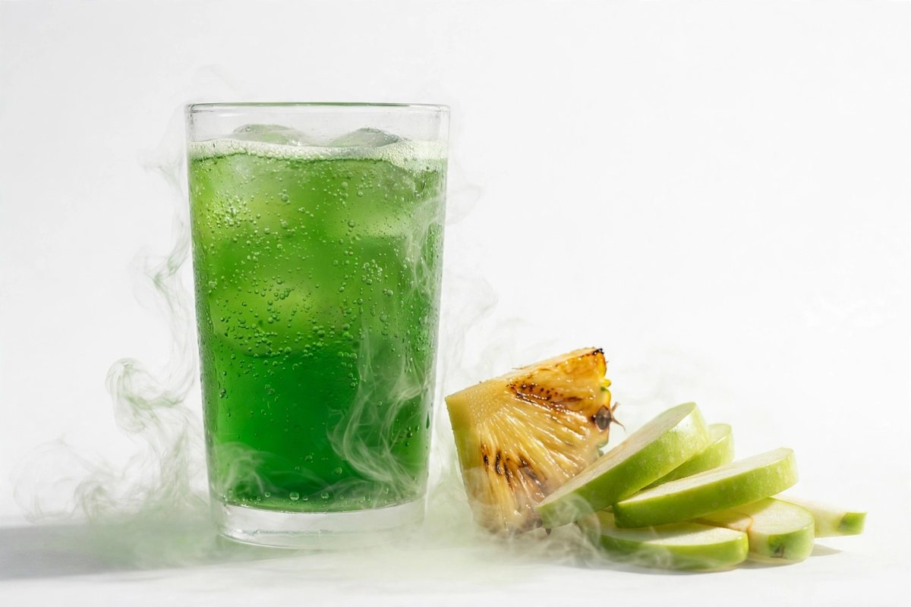
Huacatay Soda · Grilled Pineapple · Avocado Vapor · Green Apple Acid
Pairs with: Cascade Causa Remix
A structured refresh — dynamic layers stacked on the tongue.
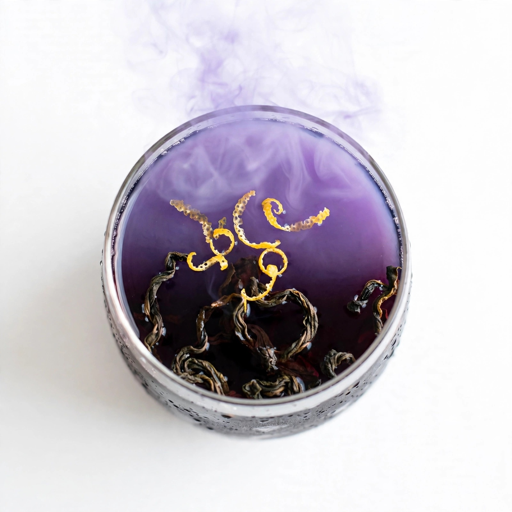
Black Plum Elixir · Citrus Zest · Smoked Oolong · Violet Fog
Pairs with: Octopus Latent Fusion
A dark, unfolding signal — velvety and quietly multidimensional.